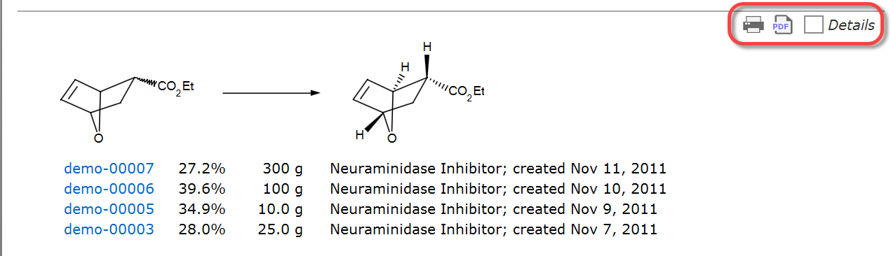

Summaries Section
This application section contains detailed tables of contents (TOC) of your experiments, ordered by reaction sequence.
When connected to an Espresso ELN server database, also the summaries of other users within your organization are available. Only step summaries of other users containing at least one finalized experiment are displayed; unfinalized experiments of other users are not accessible.

- All experiments are grouped by reaction. A reaction sketch appears just once per project in the TOC. This makes it easy to find all experiments performed for a specific reaction.
- The experiments within a reaction group can be ordered by date, yield or scale, allowing to find experiments according to specific criteria.
- The reaction sketches are ordered by synthetic step sequence. This means that the first entry always contains the first step of your sequence, followed by the subsequent one, and so on, no matter in which order they actually were created in the ELN. This supports you in quickly finding the desired step.
- The experiment summaries contain rich contextual information about the reagents and solvent used. Thus, it is immediately visible if e.g. a solvent was used for the reaction or for the workup.
1 & 2 - Users Tree: The summaries of all users of the local machine (1), as well as the ones of all users present on the Espresso ELN server database (2) can be retrieved. The server users list only appears if a connection to the server database is present.
3 - Summary Tree: Clicking one of the project sequence items displays the steps of the selected sequence. If your own local experiments are displayed, the project and sequence entries can be renamed at any time by clicking an already selected project or sequence item.
4 - Summaries: This area contains the experiment tables of contents, grouped by step and ordered by synthesis step sequence (first step first) and project (most recent one first). Clicking a blue experiment link opens the experiment in the Experiments section.
5 - Summary Group Toolbar: This toolbar affects individual step summaries only, as opposed to the Summaries Toolbar (7), which affects the whole list of displayed summaries. Thus, you can print or export to PDF a single group. The Details checkbox toggles the display of summary details; in the example below, the summary details were switched off:

6 - Sort Order Selection: All experiments within step groups can be ordered by date (default), yield or scale. Please note that this does not affect the overarching ordering of steps by reaction sequence.
7 - Summaries Toolbar: This toolbar exposes functionality for switching to the summary containing the currently active experiment, and for printing and exporting all currently displayed step summaries. See the Summary Group Toolbar (5) for acting on individual step summaries.